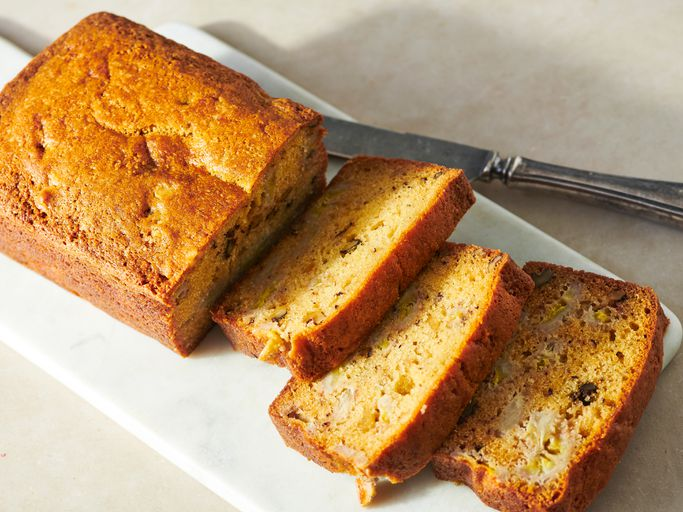

Looking for a moist banana bread recipe that never fails? Your friends and family will ask for this never-dry banana bread again and again. Moist Banana Bread Ingredients
To make this perfectly moist banana bread, you’ll need the following ingredients, many of which you may already have on hand: sugar, butter, eggs, vanilla, all-purpose flour, baking soda, salt, sour cream, walnuts (optional), and of course ripe bananas. What Makes This Banana Bread Moist?
The secret to this melt-in-your-mouth banana bread? Sour cream. The eggs and butter (and the bananas themselves) lend moisture, but the rich and tangy sour cream takes the texture over the top.
Store leftover banana bread properly to keep it moist and fresh. Once completely cooled, place the loaf in an airtight container or zip-top bag lined with a paper towel, then cover the top with another paper towel to absorb excess moisture. Seal tightly and store at room temperature for up to 4 days. Can I Freeze Banana Bread?
Store leftover banana bread properly to keep it moist and fresh. Once completely cooled, place the loaf in an airtight container or zip-top bag lined with a paper towel, then cover the top with another paper towel to absorb excess moisture. Seal tightly and store at room temperature for up to 4 days. Can I Freeze Banana Bread?
Banana bread makes a great freezer-friendly snack. Wrap individual slices tightly in plastic wrap or aluminum foil, then place them in a resealable plastic bag to help prevent freezer burn. Freeze for 2 to 4 months. Thaw slices overnight in the refrigerator, then warm in the microwave for about 15 to 20 seconds or in a low oven until heated through before serving, if desired. Allrecipes Community Tips and Praise
“I think this is quite possibly the best banana bread I've ever made and tasted,” raves amydonahue0223. “It has to be the addition of the sour cream that makes it so dense, moist, and delicious. It's the only one I'll make now.”
“This recipe is phenomenal as-is,” according to one Allrecipes community member. “I've been making it for years and it's the favorite at every party. It's what everyone always requests from me. I usually make 20+ loaves between Thanksgiving and Christmas.”
“This is the best banana bread recipe! It is super moist and is full of flavor,” says another community member. “The only thing I do differently is that I beat my bananas slightly before folding them into the batter rather than slicing them.”
Original recipe (1X) yields 10 servings